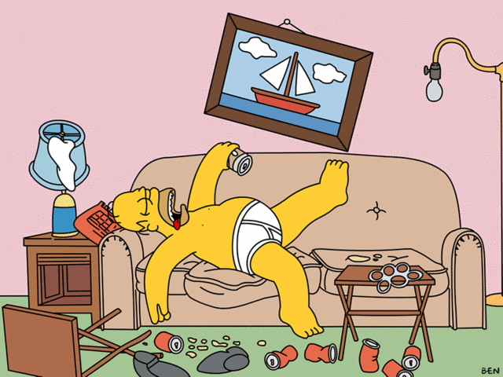

Alexey Vasyliev
Mar 12, 2012
An open source document-oriented database written mostly in the Erlang programming language
CouchApp - is a JavaScript and HTML5 applications served directly from CouchDB
Example: moscow-yammer.railsware.com
This tool help you find and track tags #must, #should, #could, #wont and #summary in Yammer.
First article about CouchDB and CouchApp from RW: blog.railsware.com/2012/03/12/couchdb-and-couchapp-part-1/
